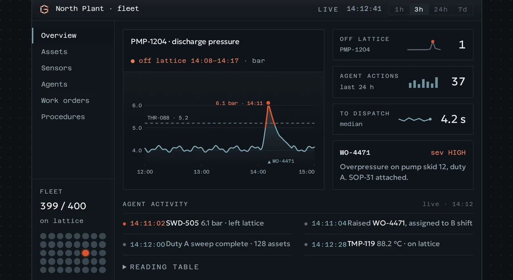
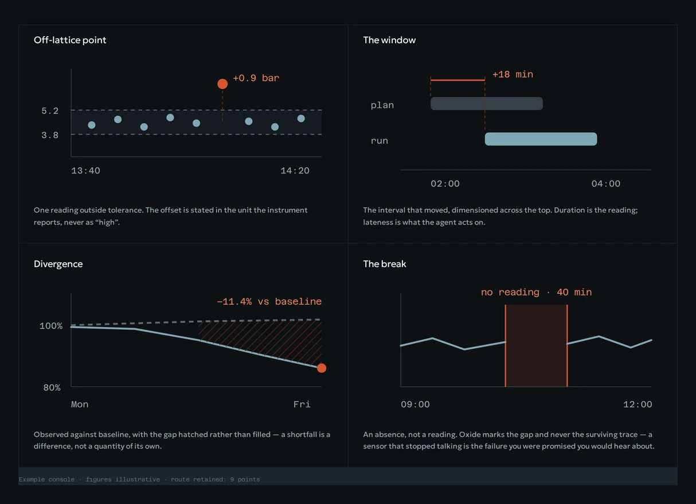
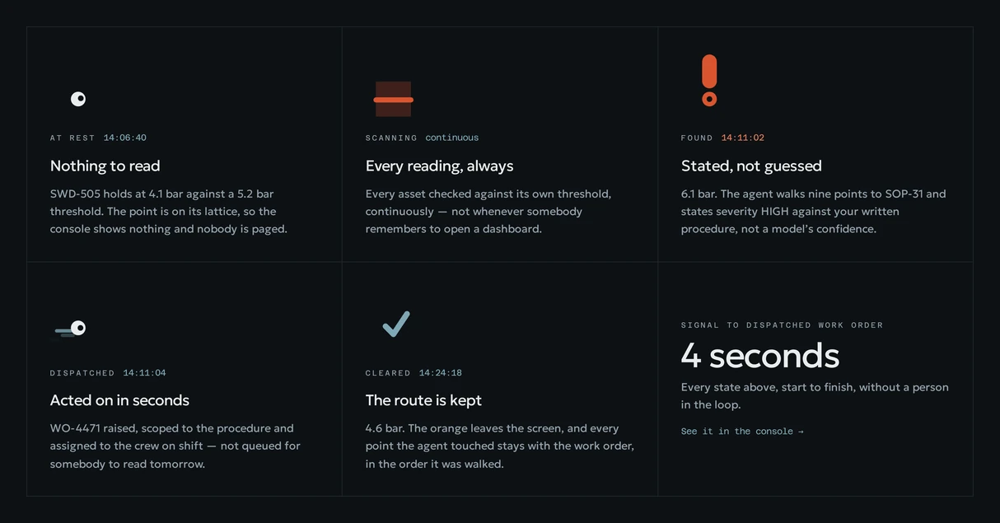

Graffs
A lattice identity for an agentic analytics platform — and the product marketing site built on it.
Context
Graffs models an industrial operation as a knowledge graph, and ships agents that traverse it — from a raw sensor reading to a dispatched work order. Finrez was brought in for the identity: a logo, a PowerPoint template, and an asset set ready for immediate use.

Problem
Every platform in the category promises accuracy, which is a claim nobody can check. Graffs needed a line an engineer would actually believe, and a visual system restrained enough that a single deviation could break it on purpose.
Role & Approach
TODO — your role, who else was involved, and how the work was scoped.
Process
The name is the thesis: Graffs sounds like graphs, and the product is one. So the mark isn’t drawn, it’s plotted — a G routed between eight lattice points with a node at every intersection, rebuildable by anyone from a coordinate table. The palette holds five values. Four are surfaces; the fifth, anomaly oxide, isn’t a colour so much as a state, and it only appears while a point is off its lattice. Type is assigned by size rather than emphasis: Geologica for language, Azeret Mono for every value.
The line
“No silent failures.” It doesn’t claim the system is always right — it claims that when it’s wrong, you will know. A promise about a failure mode can be tested; a promise about quality can’t, which is why the second kind never survives contact with an engineer.

Identity into product
The marketing site is where the system carries weight. It opens on the console itself rather than a promise: a live agent-activity feed, six browsable sections, a pressure chart with one breach hatched above its threshold, and a fleet view of four hundred assets where exactly one point wears orange. Every anomaly resolves to one of four readouts, drawn the same way each time, so an operator learns the shape once.

The mascot
Software that acts on its own is easier to trust with a presence, but a mascot is also the fastest way to undo a restrained identity. So it’s the smallest thing that could work: a single lattice node with a pupil knocked out of it, given five states — at rest, scanning, found, dispatched, cleared. It carries the product’s benefits across the agent loop, and it never appears on a surface that reports.
Constraints
One rule governs everything: orange means a point is off its lattice, right now. Nothing else in the product may borrow it — not a heading, not a call to action, not a chart series that did nothing unusual. Put it on a button and you teach an operator to ignore the one colour that matters. TODO — the client-side constraints: stakeholders, approvals, and what the identity had to replace.
Summary
Three deliverables came out of one decision about what Graffs is, which is why the mark, the deck and the site hold together. The motion, the mascot and the anomaly language are shipped as files, not descriptions — the five states are exported as CSS animations the site and the style guide both render from.
Next Steps
TODO — what shipped, where it stands with the client, and what is still open.